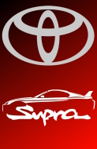
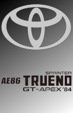

Selecione um veículo
- 
- 
-

Mazda RX-7 (FD3S)
Com uma história rica de vitórias e falhas, o Mazda RX-7 é definitivamente um dos 3 figurões japoneses no mercado automotivo. Seu propulsor é um rotativo de 2 rotores turbo, gerando 270cv ao condutor.